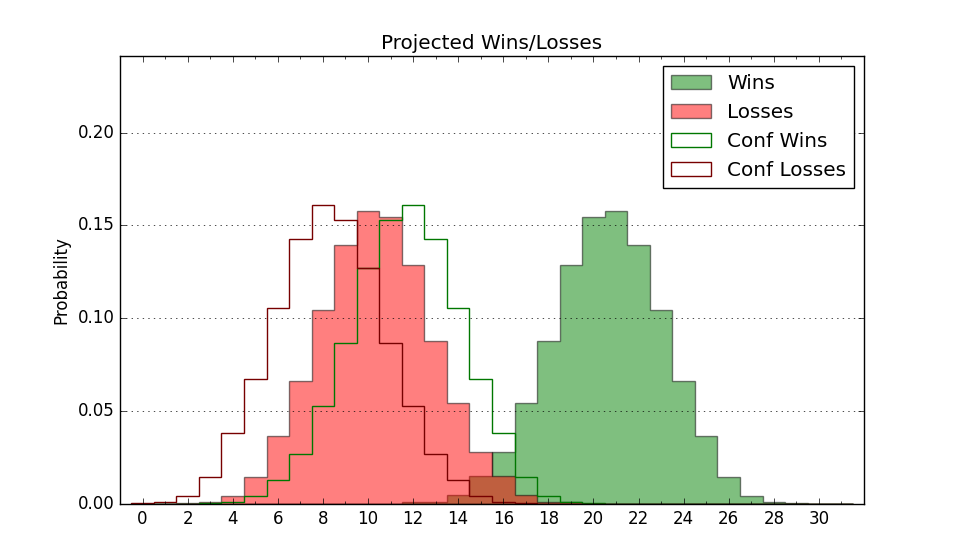

| Home | Game Probabilities | Conferences | Preseason Predictions | Odds Charts | NCAA Tournament |
| City: | Salt Lake City, Utah | |
| Conference: | Pac 12 (1st)
| |
| Record: | 0-0 (Conf) 8-2 (Overall) | |
| Ratings: | Comp.: 16.9 (38th) Net: 18.4 (36th) Off: 117.0 (23rd) Def: 98.6 (100th) SoR: 82.0 (20th) |
| Remaining | ||||||
|---|---|---|---|---|---|---|
| Date | Opponent | Win Prob | Pred. | |||
| 12/20 | Bellarmine (238) | 94.8% | W 80-60 | |||
| 12/29 | Washington St. (48) | 68.8% | W 76-71 | |||
| 12/31 | Washington (46) | 68.4% | W 81-76 | |||
| 1/4 | @ Arizona St. (103) | 61.3% | W 75-72 | |||
| 1/6 | @ Arizona (3) | 9.0% | L 72-90 | |||
| 1/11 | UCLA (78) | 76.9% | W 74-66 | |||
| 1/14 | @ Stanford (94) | 57.4% | W 77-75 | |||
| 1/18 | Oregon St. (187) | 92.4% | W 78-60 | |||
| 1/21 | Oregon (61) | 72.6% | W 79-72 | |||
| 1/24 | @ Washington St. (48) | 39.3% | L 72-75 | |||
| 1/27 | @ Washington (46) | 38.9% | L 77-80 | |||
| 2/3 | Colorado (31) | 61.3% | W 78-75 | |||
| 2/8 | Arizona (3) | 25.2% | L 77-85 | |||
| 2/10 | Arizona St. (103) | 84.4% | W 79-67 | |||
| 2/15 | @ USC (54) | 41.7% | L 76-78 | |||
| 2/18 | @ UCLA (78) | 49.5% | L 69-70 | |||
| 2/24 | @ Colorado (31) | 31.7% | L 74-79 | |||
| 2/29 | Stanford (94) | 82.1% | W 82-71 | |||
| 3/2 | California (180) | 92.1% | W 84-67 | |||
| 3/7 | @ Oregon St. (187) | 78.2% | W 73-65 | |||
| 3/9 | @ Oregon (61) | 43.8% | L 74-76 | |||
| Previous | Game Score | |||||
| Date | Opponent | Win Prob | Result | Off | Def | Net |
| 11/6 | Eastern Washington (186) | 92.4% | W 101-66 | 7.3 | 13.0 | 20.4 |
| 11/10 | UC Riverside (264) | 95.7% | W 82-53 | -7.5 | 13.4 | 5.9 |
| 11/16 | (N) Wake Forest (73) | 63.3% | W 77-70 | 1.7 | -4.9 | -3.3 |
| 11/17 | (N) Houston (2) | 15.2% | L 66-76 | 3.7 | -3.1 | 0.6 |
| 11/19 | (N) St. John's (65) | 59.6% | L 82-91 | -0.1 | -15.3 | -15.4 |
| 11/27 | @Saint Mary's (49) | 40.2% | W 78-71 | 15.7 | -4.1 | 11.6 |
| 11/30 | Hawaii (132) | 87.8% | W 79-66 | 1.8 | -8.6 | -6.8 |
| 12/5 | Southern Utah (225) | 94.0% | W 88-86 | -4.5 | -20.6 | -25.1 |
| 12/9 | BYU (4) | 33.3% | W 73-69 | 4.1 | 11.6 | 15.8 |
| 12/16 | Utah Valley (166) | 90.7% | W 76-62 | -5.8 | 0.8 | -5.0 |
| Stats & Trends | |||||
|---|---|---|---|---|---|
| Current | Day | Week | Month | Season | |
| Composite | 16.9 | +0.3 | +0.1 | +1.5 | +3.9 |
| Comp Rank | 38 | +2 | +4 | +4 | +21 |
| Net Efficiency | 18.4 | +0.4 | -0.1 | -2.8 | -- |
| Net Rank | 36 | +4 | +2 | +5 | -- |
| Off Efficiency | 117.0 | +0.5 | +0.3 | +2.2 | -- |
| Off Rank | 23 | -- | +3 | +27 | -- |
| Def Efficiency | 98.6 | -0.0 | -0.4 | -4.9 | -- |
| Def Rank | 100 | -1 | -1 | -19 | -- |
| SoS Rank | 60 | +4 | -20 | +83 | -- |
| Exp. Wins | 20.6 | +0.1 | +0.5 | +1.5 | +3.3 |
| Exp. Conf Wins | 11.7 | +0.1 | +0.4 | +0.7 | +1.6 |
| Conf Champ Prob | 3.7 | +0.7 | +0.4 | -3.2 | -1.1 |

| Advanced Stats | ||
|---|---|---|
| Stat | Value | Rank |
| Off Eff FG % | 0.582 | 17 |
| Off Ast Ratio | 0.201 | 3 |
| Off ORB% | 0.330 | 55 |
| Off TO Rate | 0.143 | 140 |
| Off FT Ratio | 0.337 | 172 |
| Def Eff FG % | 0.479 | 115 |
| Def Ast Ratio | 0.138 | 167 |
| Def ORB% | 0.225 | 35 |
| Def TO Rate | 0.134 | 276 |
| Def FT Ratio | 0.239 | 24 |